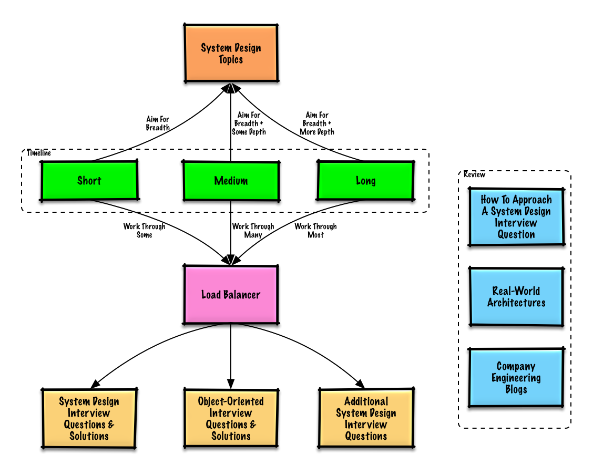
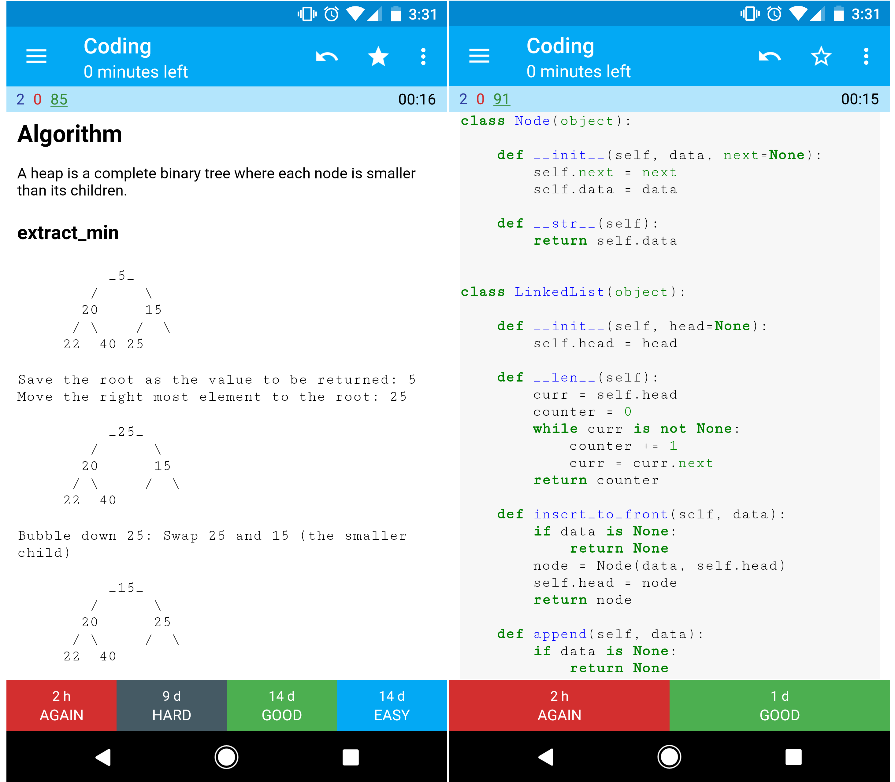

The System Design Primer — Study Path
Start here. This page explains why this material exists, how to pace yourself, and the exact four-step process you'll lean on for every design problem later in the course.
System design is a broad topic — there's a vast number of resources scattered across the web, each covering a slice of it. This course is an organized walk through one well-known collection of that material (the open-source system-design-primer repo), reassembled so you never have to guess what to read next.
Two reasons people work through it:
It's also a living, open-source body of knowledge — contributed to and corrected by the community over time, rather than written once and frozen.
Q: For interviews, do I need to know everything here?
A: No. What you're asked depends on your experience level, your technical background, the role, the company, and some luck. More senior candidates and architects are generally expected to know more. Start broad, then go deeper in a few areas that matter for your situation.

Adjust how deep you go based on how much time you have before your interview (or how much depth you simply want):
| Do this | Short | Medium | Long |
|---|---|---|---|
| Read the core-path modules (02–11) for a broad understanding of how systems work | ✓ | ✓ | ✓ |
| Read a few company engineering blogs for the companies you're interviewing with | ✓ | ✓ | ✓ |
| Read a few real-world architecture write-ups | ✓ | ✓ | ✓ |
| Review this interview framework below | ✓ | ✓ | ✓ |
| Work through the system design solutions (Module 14) | Some | Many | Most |
| Work through the OOD solutions (Module 15) | Some | Many | Most |
| Review additional practice questions (Module 16) | Some | Many | Most |
Breadth first, depth second — in all three tracks. A little knowledge of every topic beats deep knowledge of one.
A system design interview is an open-ended conversation — you're expected to lead it, not wait to be asked the right questions. The same four steps work for almost every prompt you'll see in Module 14's solutions, so it's worth internalizing now, before you've seen a single worked example.
Gather requirements and scope the problem before designing anything. Ask:
Go deep on each core piece. For example, if asked to design a URL-shortening service (Module 14 covers this exact problem — Pastebin), you'd discuss things like generating and storing a hash of the full URL, hash collisions, whether to use SQL or NoSQL, the database schema, how a hashed URL gets translated back to the original, and the API/object-oriented design underneath it.
Identify bottlenecks given the constraints from Step 1, and address them — do you need a load balancer, horizontal scaling, caching, database sharding? Discuss trade-offs honestly. Everything is a trade-off — you'll see this phrase recur throughout every module in this course, because it's the single most load-bearing idea in the whole subject.
You may be asked to estimate things by hand — how long it'd take to generate 100 thumbnails from disk, how much memory a data structure needs. Module 02 (Foundations) gives you the two reference tables you'll use for this: the powers-of-two table and the latency numbers every programmer should know. Keep them close; you'll reach for them constantly.

System design is usually paired with a separate coding interview. The sister project Interactive Coding Challenges covers that side, with its own Anki deck of coding problems — worth a look if you need both.